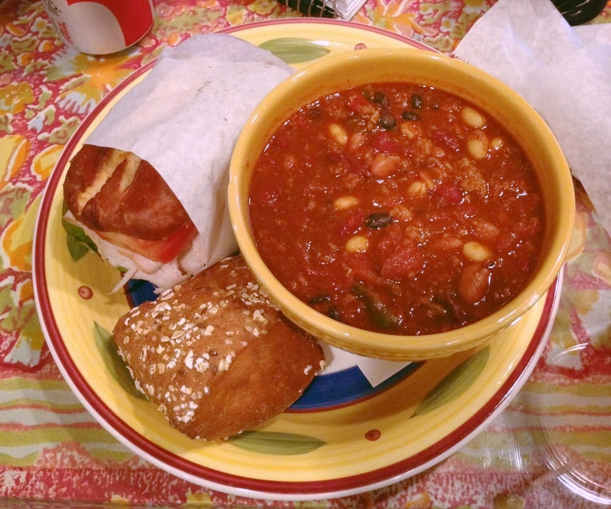

My Dad's Turkey Chili

A hearty and heart-healthy tomato-based chili
This delicious chili is perfect for a winter weeknight. It can be made with cheap, healthy ingredients and it makes a huge volume.
Be sure to have a large stock pot on hand (6+ quarts). As someone who cooks for just myself, I love to make the full recipe and divvy up the portions for
quick dinners later.
- 1 large red onion, diced
- 3 large bell peppers of varying colors, diced
- 2 tbsp olive oil
- 2 pounds lean ground turkey
- 56 oz canned diced tomatoes
- 1/2 cup dark brown sugar
- 2 tbsp dark chili powder
- 1 can white beans, drained
- 1 can black beans, drained
- 1 can red beans, drained
- 1 can chili beans, not drained
- Heat olive oil, add onions and peppers, saute until translucent, 5-6 minutes
- Add ground turkey, salt generously, break up with spoon, cook until browned
- Add in chili powder, brown sugar, and tomatoes, cook on medium-high for 15 minutes
- Add in all beans and cook for 15 more minutes or until beans have softened
- Let stand, add salt, pepper, and hot sauce to taste